hurd
@futur3sn0w
Hey there! I'm Gavin. I am a 20 year old graphic and web designer from the east coast of the US. I've been exploring the ins and outs of technology since I was just 9 years old, and have been designing on the web since I was about 12. I've always loved discovering what makes the web unique and special, and designing fun experiments and utilities that take advantage of it. If you're interested in the kind of design work I do (both web and graphic), check out the projects on this page!
×
PlusUI
Newtab replacement and dashboard for tablets & TVs; Your info at your fingertips!
Test
On the Web
Show all
PlusUI
The digital dashboard for your large-screen devices.
PlusUI is your one-stop-shop for any information you want to view at a glance, as well as
shortcuts you want quick access to. Browsers can use PlusUI as a 'new-tab' page replacement for
richer data, custom backgrounds, and more.
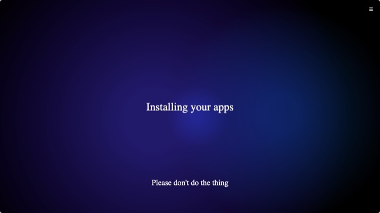
waitaMinute
The various "installing your apps" screens from
the Windows OOBE, compiled and recreated using web technologies. Mainly for demo and educational
use.
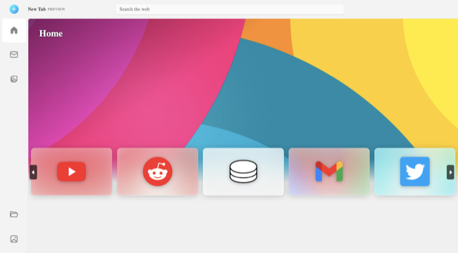
NewTab11
A replacement new-tab page for your web browser,
designed after the new Windows Store in Windows 11.
Windows 10X
A faithful recreation of Microsoft's scrapped Windows
10X OS using web technologies. Includes a bootscreen, OOBE, and full shell clones. (Unfinished, may
be buggy!)
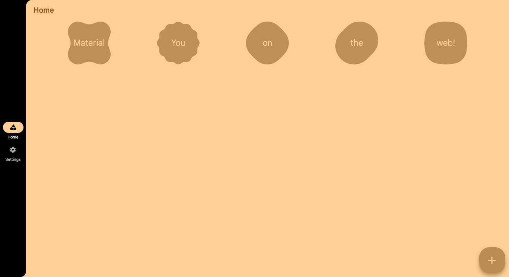
Pinboard
A digital cork-board of sorts, with customizable pins,
colors, shapes, and more. Created with Google's Material You (Material Design 3) design language.
Change the background color and more from settings.
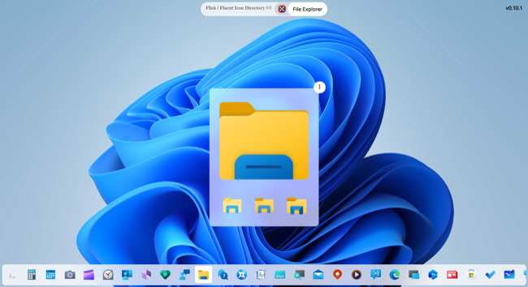
Flick
A hub for viewing Microsoft's Fluent-designed icons
found in
Windows 11, late Windows 10, and Windows 10X builds. Created with the Fluent-design and leaked
Windows 12 UI design language(s).
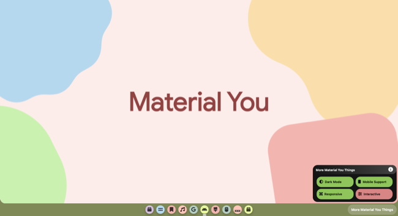
WebFX
A collection of experiments using various web
technologies, created with Google's ChromeOS and Material You (Material Design 3) design languages.
Click the name of a page (in the bottom-right) to view more information.
Concepts
Show all
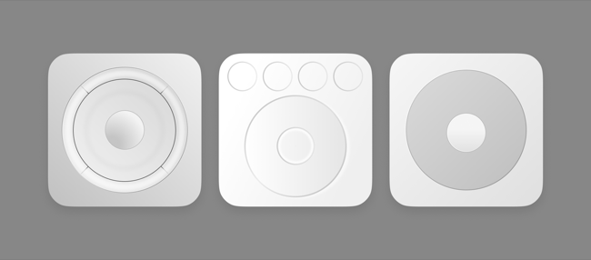
iPod - Scroll, Touch, Click!
Just a small mockup I made of the different hardware
interfaces included throughout the lifespan of Apple's iPod (Classic) series.
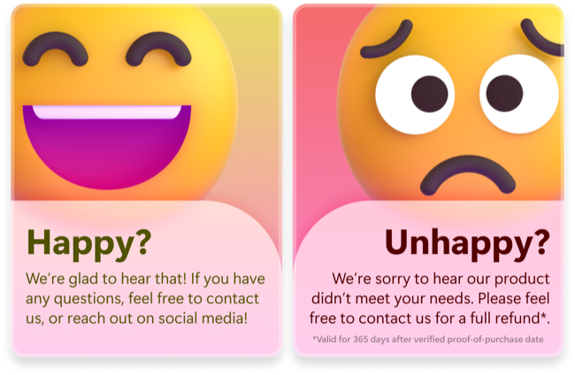
Feedback Card
A conceptual design for a physical product's feedback
card insert, included [in the box] with the purchase of a physical item, to encourage the
customer to give feedback on the product.
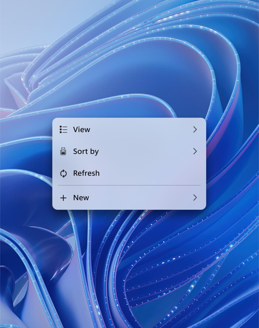
Windows 11 Context Menu
My second take on a Fluent-designed modern context menu
for Windows 10 or 11 (Windows 11 in this case). Simplified menu options mixed with uniform sizes
make for a familiar take on the classic menu.
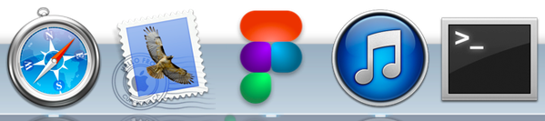
Figma - OS X Mavericks
Created as a personal experiment, this icon was an idea
to envision what the Figma app's icon could look like with a skeuomorphic touch. It's not like
anything I've done before, but I quite like it!
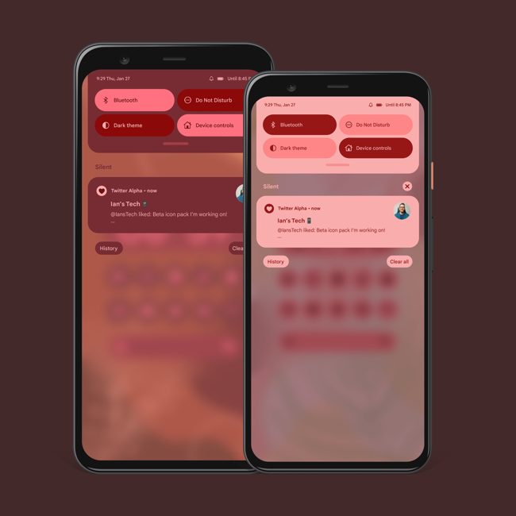
Android Notification Tray
I wanted to create a modern alternative to Android's
notification center as shown in Android 12+. The idea was to add more vivid colors in order for the
added background blur to be more visible. Featuring light and dark modes!
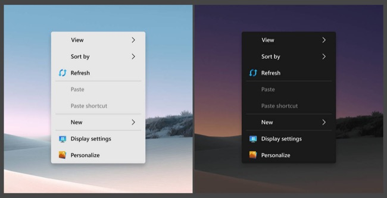
Fluent Context Menu
My first take on a Fluent-designed modern context menu
for Windows. I took the desktop context menu from Windows 10, and envisioned it with the acrylic
material as the backdrop, and modern Fluent icons to replace the standard glyphs.
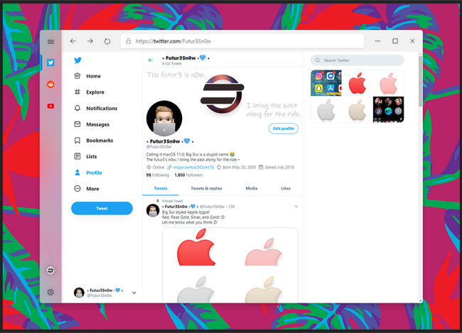
MS Edge - Vertical Tabs
The new Chromium-based Microsoft Edge is/was set to
get a vertical tabs option in the (near?) future.
I decided to mock-up a modern, Fluent version of the browser in the collapsed-tabbed view.
The tab indicator (blue bars on the left side) shows that there's multiple tabs open for a single
site, aka, tab grouping!
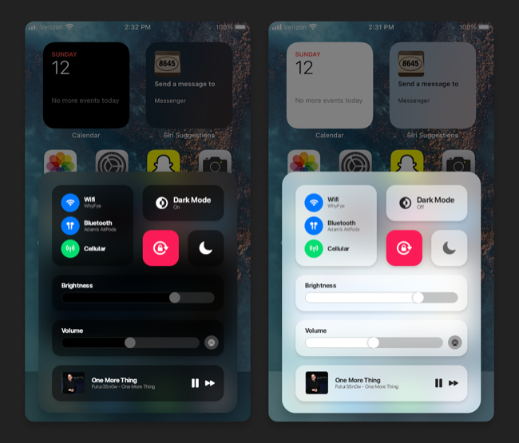
Big Sur Control Center
What if macOS 11 Big Sur's control center made it's
way to iOS? This concept takes cues from macOS, iOS 10, and the AirPods popup UI to envision a
redesigned iOS control center.
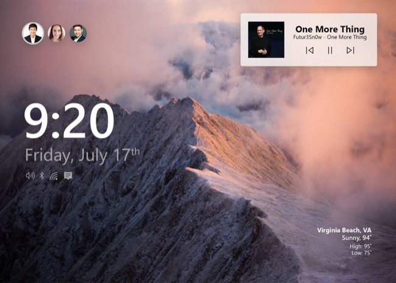
Windows Smart Display
An experiment to envision what a Microsoft-designed
smart-home display/hub could look like. Includes login options, media playback controls, weather,
and more!
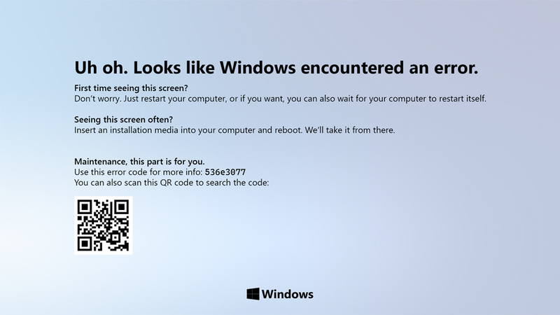
Windows - Fluent BSOD
The current BSOD has been kinda lackluster (and a bit
unprofessional, becoming a meme in the tech community) since Windows 8.
I think a cleanup, and a more modern look would suffice for sure!
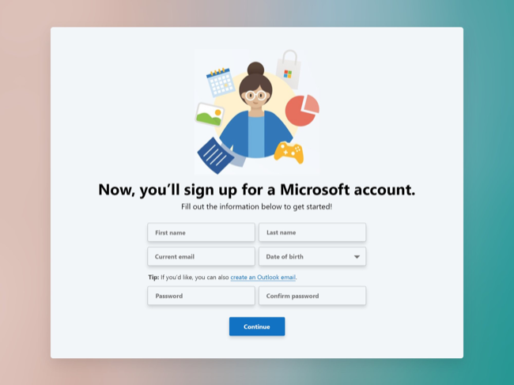
Microsoft - Registration
Part of the design-a-day challenge, I created a
registration page for a Microsoft account, taking design cues from the Windows 10X and 11 OOBE.
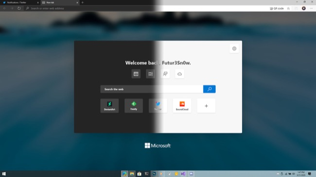
Edge - Fluent NTP
After creating previous Fluent-design concepts, I
thought I'd redesign Microsoft Edge's new-tab page to both match the browser UI better, and have
more Fluent elements.
Downloadables
Show all
TITLE
BODY
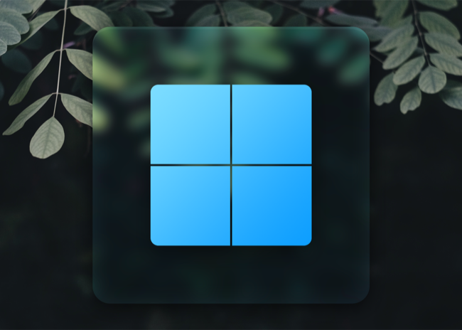
Hero11 - Wallpapers
Wallpaper set that sports the Windows 11 Start Button
up front. It mimics the frosted glass and pseudo-3D effect found by using a slight inner glow, and
upper border. There are 15 wallpapers in the pack, using images from Unsplash, the Windows 11 Bloom
wallpapers, and an extra Xbox+Forza controller set, which uses AI upscaled images of the
Forza 5 Xbox Controller promo.
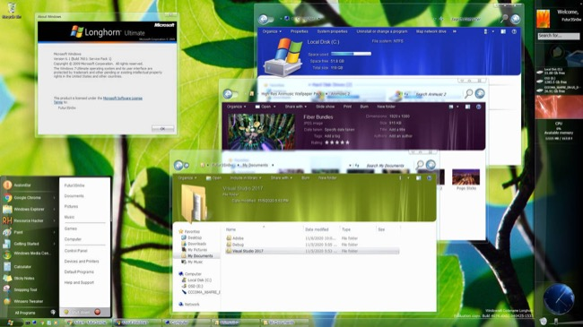
Longhorn7 - Custom Pack
A collection of tools and resources to turn your
Windows 7 desktop into Microsoft Longhorn! Longhorn7 compiles the best resources from creators here
on DeviantArt to make your Windows 7 setup look like Microsoft's forgotten OS!
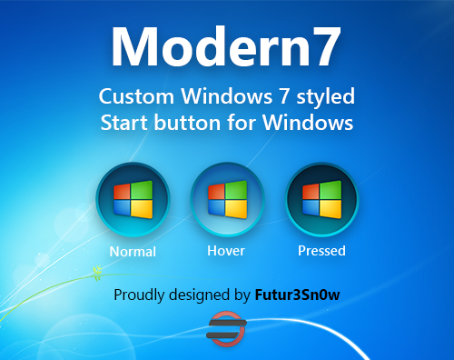
Modern7 - Start Orbs
This is Modern7. A modern refresh of the Windows 7
Start orb, with a hint of Fluent-design thrown in.
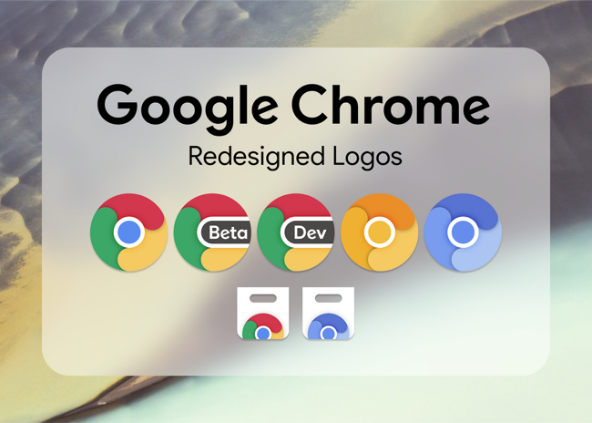
Chrome Icons - Redesign
A fun mini-project I started to envision a new take on
Google Chrome's iconography. Includes icons for Canary, Dev, Beta, as well as Chromium(s), and the
Chrome Store(s).
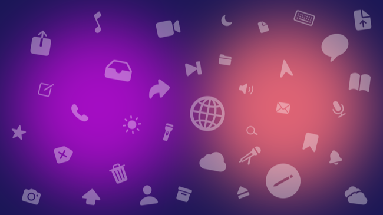
"Interpol" - Wallpaper
Today, I made a new wallpaper titled Interpol. It uses Apple's San Francisco font's glyphs on top of
a vibrant, dual-radial-gradient background.
I plan on making more fun wallpapers in the future, so let me know how you like this one!
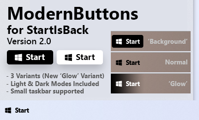
ModernButtons - Start Orb
Inspired by an incredible concept by my good friend
@zeealeid, here are some simplistic and modern start buttons for your Windows setup!
Version 2.0 includes a fix for sizing on large taskbars, introduces small taskbar support, and adds
a new 'Glow' variant!
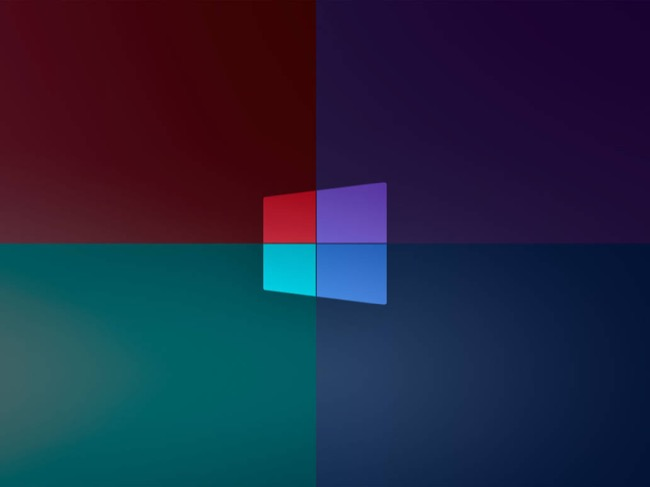
Windows 10X - Wallpapers
If you like Windows 10X as much as I do, then you'll
definitely enjoy these wallpapers!
They feature the wallpaper from Windows 10X with the logo on top, in 4 colors (courtesy of @niivu!)
They're all 4000x3000 resolution, which means they'll scale perfectly on many displays.
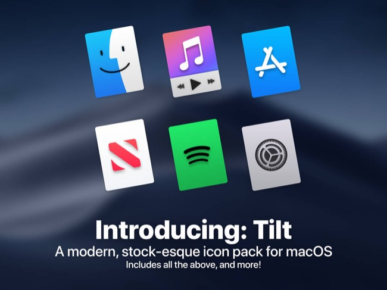
Tilt - Icon Pack
Say hello to Tilt! The modern and minimal icon pack
for
macOS with a stock feel. Created with the help of CamieeHFX, inspired by @Octaviotti.
Music Production
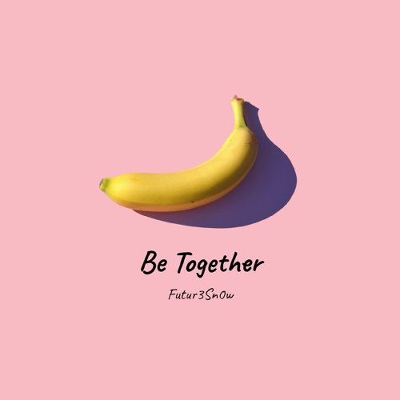
Be Together
Dedicated to my best friend (and sidekick) Ari 😊
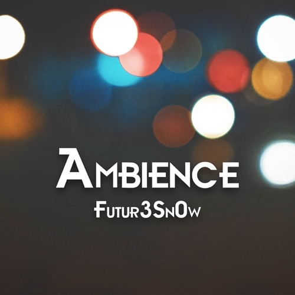
Ambience EP
My debut, 4 track EP including "Night Drive", "After
Party", and "Aurorian Storm".
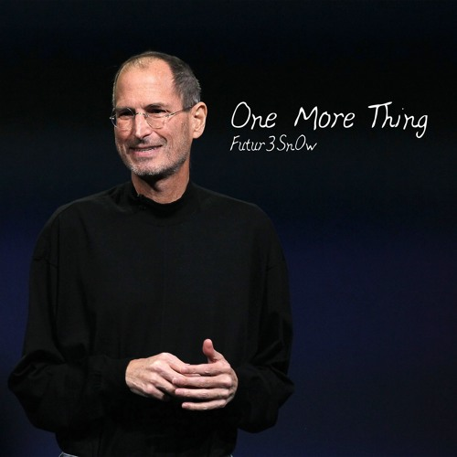
One More Thing
Created as a tribute to the late Steve Jobs, an
incredible visionary and innovator.